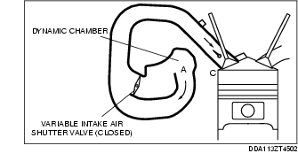
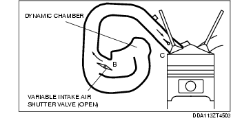

Variable intake air system operation [ZY]
Operation conditions
• If any of the following conditions are met:
- - Engine speed is approx. 4,100 rpm or more.
- - Engine speed is approx. 1,400 -2,600 rpm and the throttle opening angle is the specified value or more. (heavy load condition)
Except for operation conditions. (variable intake air shutter valve is closed)
• The variable intake air shutter valve is closed by variable intake air shutter valve actuator operation.

• Under this condition, the effective intake manifold length is from the intake valve to the dynamic chamber (A-C). An inertia charging effect is obtained due to this elongated intake manifold length, air intake volume in the cylinder increases, and higher torque is obtained at low to medium engine speeds.
When operation conditions are met. (variable intake air shutter valve is open)
• The variable intake air shutter valve is opened by variable intake air shutter valve actuator operation.

• Under this condition, the effective intake manifold length is from the intake valve to the chamber (B-C). The intake air inertia effect is obtained at high engine speeds due to this shortened intake passage, increasing intake airflow amount in the cylinder, and higher torque at high engine speeds is obtained.